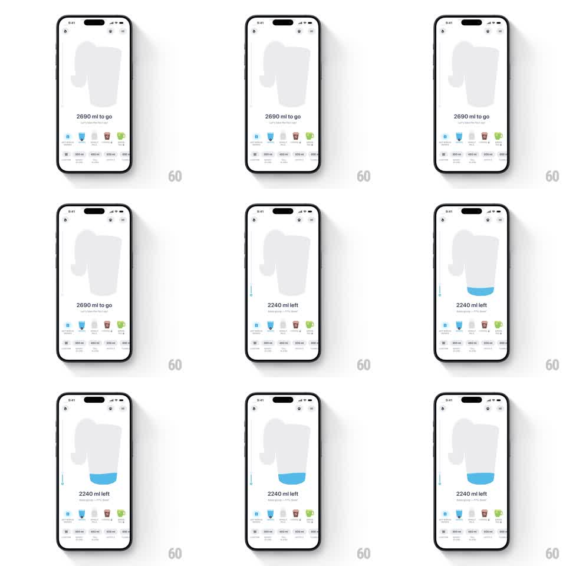

Media
Frame-by-frame

Rebuild this animation 1:1: Liquid Cats' logging animation - tapping a drink size fills the cat-shaped container with blue liquid, the level rising with a wavy surface as the remaining-goal counter updates.

Rebuild this animation 1:1: Liquid Cats' logging animation - tapping a drink size fills the cat-shaped container with blue liquid, the level rising with a wavy surface as the remaining-goal counter updates. ## Integration Integration: stack-agnostic spec - springs given as stiffness/damping, timed motions as duration + curve; map every value to your framework and animation library of choice. ## Scene Light screen: a large centered cat-silhouette container (upright cat with tail), "2690 ml to go" counter with a small paw subline, a row of drink-type icons with size chips (water, tea, coffee, juice), quick-add ml buttons, and top-bar icons. ## Motion spec Pattern: liquid fill with sloshing surface, ~1.2s. - Trigger: tapping a quick-add amount starts the fill. - Fill: blue liquid rises from the bottom inside the cat silhouette (600-800ms, ease-out), the surface rendered as a wave that oscillates (amplitude ~6px decaying over 1s) before settling flat. - Splash: a few droplet particles fleck the inner walls at the rising edge and fade (400ms). - Counter: "2690 ml to go" counts down to "2240 ml left" in sync with the rising level (600ms); the subline percentage updates with it. - Settle: the liquid does one small after-slosh (amplitude 3px, 300ms) when the fill stops. ## Calibration - Liquid is clipped strictly to the cat silhouette, including the tail curve. - The wave surface tilts slightly during the rise, like water in a moving vessel. ## Reduced motion Level steps to the new height with a 250ms fade; counter updates without slosh. ## Don't miss - The cat container reads clearly even when empty (faint gray fill). - The fill color is a single saturated sky blue - no gradient banding.